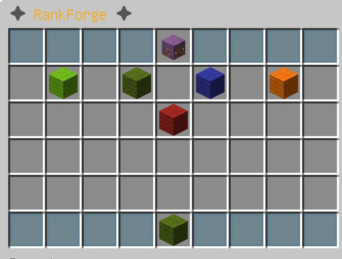
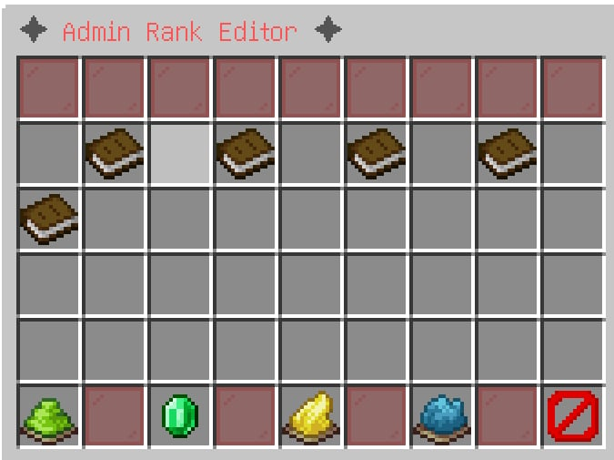
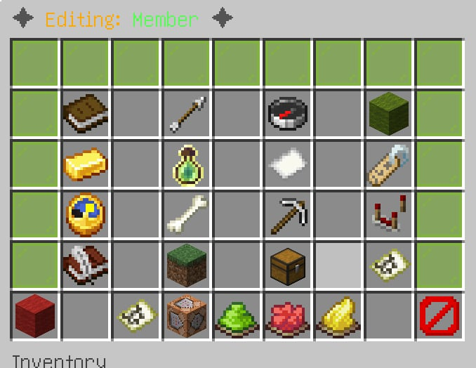
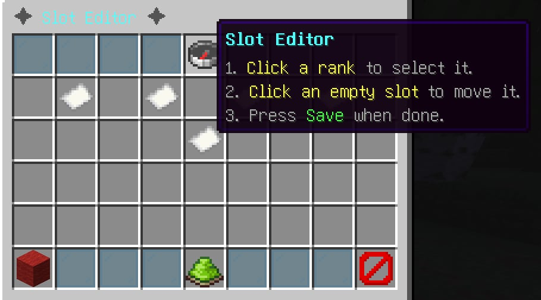
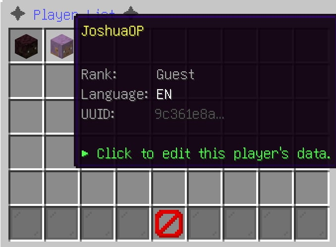

GUI & presentation
Explore the complete GUI and presentation documentation below for RankForge.
🖥️ GUI System
RankForge includes five distinct GUIs.
Animated Rank Tree GUI (/rank)
The primary player-facing GUI. Opens when a player runs /rank (or clicks with no arguments). Displays all ranks in the chain, with the player's current position highlighted. Icons use the rank's configured material, display-name, and lore. The GUI is animated for visual appeal.

In-game preview of the animated rank tree progression GUI.
Admin Rank Editor GUI (/rank editor)
Lets admins browse all ranks and click into the detail editor for any rank. Changes made in the GUI are auto-saved to ranks.yml via a debounced async write (saves fire at most once per second even during rapid edits).

In-game preview of the admin rank editor GUI.
Rank Detail Editor GUI (/rank editor <rankId>)
A per-rank editor that lets you modify:
- Display name
- Next rank link
- Material / icon
- Required money, XP, playtime, mob kills, block breaks
- And more — via in-game chat prompts

In-game preview of the rank detail editor GUI.
Drag-and-Drop Slot Editor (/rank editor drag)
A visual editor for rearranging rank icons in the GUI. Drag an icon from one slot to another to update its slot value without touching ranks.yml. Changes persist immediately.

In-game preview of the drag-and-drop slot editor GUI.
Player List GUI (/rank playerlist)
Lists all players whose data is in the cache, with their rank shown on the icon. Clicking a player opens the PlayerDataEditorGUI where an admin can view and change that player's rank data directly.

In-game preview of the player list GUI.
Player Data Editor GUI (PlayerDataEditorGUI)
A 54-slot editor opened by clicking any player in the Player List GUI. Provides the following buttons:
In-game preview of the player data editor GUI.
| Slot | Button | Action |
|---|---|---|
| 4 | Player Head | Summary (UUID, rank, XP, balance, status) |
| 10 | Rank | Click to change the player's rank (chat input) |
| 12 | Experience | Click to set the player's experience (chat input) |
| 14 | Balance | Click to set the player's economy balance (chat input) |
| 16 | Rank History | Displays the selected player's last 10 rank changes directly in the administrator's chat |
| 45 | ← Back | Return to the Player List GUI |
| 49 | Reset | Reset the player's data to server defaults |
| 53 | Close | Close the GUI |
Reset also clears any active /rank bypassreq waivers for that player, alongside their rank, XP, and balance — so a reset always returns a player to a fully clean, server-default state.
Rank History Button (Slot 16)
Clicking the Rank History button sends the selected player's rank history directly to the administrator's chat — no new GUI or inventory is opened. The output is identical to running /rank history as that player: it uses the same RankHistoryManager, formatter, and display logic. Up to 10 entries are shown, newest first, including the timestamp, change type (Rankup / Set / Reset), and the from/to rank IDs. Works for both online and offline players — a fast way to audit a player's progression without leaving the GUI.
External GUI Registry (API)
Developers can replace any GUI with their own implementation using ExternalGUIRegistry. See Developer API.
🖥️ GUI Configuration (gui.yml)
All GUI layout, appearance, slot, and interaction settings are controlled by plugins/RankForge/gui.yml. The file is auto-generated on first run and supports full customization without editing Java code.
Note for upgraders: In previous versions, the gui: (rows) and gui-click-shield: sections lived in config.yml. They have moved to gui.yml. RankForge automatically migrates your existing values on first startup — no manual reconfiguration is required. If either section is missing from gui.yml, the plugin reads any custom value you had in config.yml and writes it to gui.yml transparently.
File Location
plugins/
└── RankForge/
└── gui.ymlStructure Overview
# ── GUI Window Size ────────────────────────────────────────────
# Number of inventory rows in each GUI (1–6).
gui:
rows: 6
admin-rows: 6
# ── GUI Click Shield ───────────────────────────────────────────
# Per-player cooldown that prevents click-spam inside any RankForge GUI.
gui-click-shield:
enabled: true
cooldown-ms: 400 # Minimum ms between two accepted clicks per player
# ── Player-facing rank tree GUI (/rank) ────────────────────────
player-gui:
title: "&8✦ &6RankForge &8✦" # GUI window title
border-material: CYAN_STAINED_GLASS_PANE # Border block type
head-slot: 4 # Slot for the player's head item
info-slot: 49 # Slot for the info/progress item
# ── Admin rank editor (/rank editor) ──────────────────────────
admin-gui:
title: "&8✦ &cAdmin Rank Editor &8✦"
border-material: RED_STAINED_GLASS_PANE
# ── Per-rank detail editor (click a rank in the admin editor) ──
detail-editor:
title-prefix: "&8✦ &6Editing: "
border-top: LIME_STAINED_GLASS_PANE
border-bottom: GRAY_STAINED_GLASS_PANE
# ── Drag-and-drop slot reassignment editor ─────────────────────
drag-drop:
title: "&8✦ &bSlot Editor &8✦"
# ── Player list GUI (/rank playerlist) ────────────────────────
player-list:
title: "&8✦ &9Player List &8✦"
border-material: BLUE_STAINED_GLASS_PANE
prev-page-slot: 45
close-slot: 49
next-page-slot: 53
# ── Player data editor (click a player in the player list) ─────
player-data-editor:
title-prefix: "&8✦ &9Editing: "
border-material: LIGHT_BLUE_STAINED_GLASS_PANE
block-breaks:
slot: 30
material: IRON_PICKAXE
name: "&7&lBlock Breaks"
lore:
- "&7Exact blocks broken (tracked by RankForge)."
# ── Block-break stat panel settings ───────────────────────────
block-break-stats:
show-in-rank-gui: true
show-in-player-data-editor: true
label: "&7Blocks Broken"
material: IRON_PICKAXE
value-format: "&a%count%"
unmet-format: "&cNeed &e%required% &cblocks &8(have &7%current%&8)"
met-format: "&a✔ &e%required% &ablocks broken"
# ── Shared elements used across all GUIs ─────────────────────
common:
filler-material: GRAY_STAINED_GLASS_PANE
close-material: BARRIER
close-name: "&cClose"
back-material: ARROW
back-name: "&7Back"
# ── Requirement status icons on the next-rank GUI item ────────
requirement-icons:
enabled: true
met-symbol: "&a✔"
unmet-symbol: "&c✘"
show-details: true
# ── GUI themes (border colors) ────────────────────────────────
themes:
default:
player-border: CYAN_STAINED_GLASS_PANE
admin-border: RED_STAINED_GLASS_PANE
list-border: BLUE_STAINED_GLASS_PANE
dark:
player-border: BLACK_STAINED_GLASS_PANE
admin-border: RED_STAINED_GLASS_PANE
list-border: BLUE_STAINED_GLASS_PANE
gold:
player-border: YELLOW_STAINED_GLASS_PANE
admin-border: ORANGE_STAINED_GLASS_PANE
list-border: YELLOW_STAINED_GLASS_PANEKey Sections
| Section | Purpose |
|---|---|
gui | Window row count for the player GUI and admin editor |
gui-click-shield | Per-player click cooldown to prevent inventory spam |
player-gui | Player-facing rank tree: title, border, slot positions |
admin-gui | Admin rank editor: title and border color |
detail-editor | Per-rank detail editor: title prefix and border colors |
drag-drop | Drag-and-drop slot editor title |
player-list | Player list GUI: title, border, pagination slot positions |
player-data-editor | Player data editor: title, border, and block-break display |
block-break-stats | How block-break counts appear across all GUIs |
common | Shared filler, close, and back button materials and labels |
requirement-icons | Met/unmet symbols on the next-rank item |
themes | Named border-color presets (active theme configurable per GUI) |
Customization Tips
- Titles support
&color codes and most Bukkit formatting codes. - Materials must be valid Bukkit
Materialenum names (all uppercase, underscores). - Slots are 0-indexed inventory slots (0–53 for a 6-row chest).
- Apply changes with
/rank reload— no server restart needed.
GUI Reference
| GUI | Command | Description |
|---|---|---|
| Rank Tree | /rank | Player-facing animated rank progression view |
| Admin Editor | /rank editor | Create, edit, and delete ranks in-game |
| Slot Editor | /rank editor drag | Drag-and-drop rank reordering |
| Player List | /rank playerlist | Browse and edit all player data |
| Player Data Editor | (click player in list) | Edit individual player rank/XP/money |
💄 Cosmetics
Cosmetics are managed by CosmeticManager, which coordinates four sub-systems.
Boss Bar
| Config Key | Default | Description |
|---|---|---|
cosmetic.bossbar.enabled | true | Enable/disable boss bars entirely |
cosmetic.bossbar.duration-ticks | 100 | Ticks before the bar auto-dismisses |
- Shows a yellow SOLID bar on rankup with the new rank name
- Shows a green SEGMENTED_10 bar for progress checks (via API)
- Concurrent bars per player are handled correctly — a new bar cancels the old dismiss timer
Particle Trail
| Config Key | Default | Description |
|---|---|---|
cosmetic.particles.enabled | true | Enable/disable particle effects |
A timed particle trail is spawned around the player immediately on rankup. It expires automatically — no permanent persistent trails. The trail is suppressed in LOW performance mode.
Tablist Prefix
| Config Key | Default | Description |
|---|---|---|
cosmetic.tablist.enabled | true | Enable/disable tablist formatting |
cosmetic.tablist.format | {prefix}{player} | Format string. Tokens: {prefix}, {player} |
The player's tab-list name is updated on:
- Login
- Rankup
- Plugin reload (applied to all online players)
Join / Quit
JoinQuitManager handles restoring cosmetics when players reconnect and cleaning them up on disconnect (removes boss bars, stops particle tasks, resets tablist).
📊 PlaceholderAPI Support
With PlaceholderAPI installed, RankForge registers all %rankforge_*% placeholders automatically. Use them in any PAPI-compatible plugin (scoreboards, chat, tab lists, holograms, etc.).
Available Placeholders
| Placeholder | Example Output | Description |
|---|---|---|
%rankforge_rank% | Veteran | Current rank ID |
%rankforge_rank_name% | &2[Veteran] | Current rank display name |
%rankforge_rank_display% | &2[Veteran] | Alias for rank_name |
%rankforge_rank_prefix% | &2[Veteran] | Current rank's chat-prefix |
%rankforge_rank_position% | 3 | Position of current rank in the chain (1-based) |
%rankforge_is_max_rank% | false | true if player is at the final rank |
%rankforge_next_rank% | Elite | Next rank ID, or MAX |
%rankforge_next_cost% | $100,000 | Next rank's money requirement formatted |
%rankforge_cost% | $10,000 | Current rank's money requirement formatted |
%rankforge_progress% | 62.5 | Overall requirement progress as a decimal |
%rankforge_progress_percent% | 62.5% | Same with % appended |
%rankforge_progress_bar% | ██████░░░░ | Visual ASCII progress bar |
%rankforge_required_progress% | $100,000 Lv75 | All requirements for the next rank |
%rankforge_remaining_progress% | $37,500 Lv12 | What remains to meet requirements |
%rankforge_money% | $62,500 | Player's current Vault balance |
%rankforge_has_money% | false | true if player can afford the next rank |
%rankforge_missing_money% | $37,500 | Money still needed for next rank |
%rankforge_requirements_status% | §c✘ Requirements Unmet | Met/unmet status label |
%rankforge_requirements_detail% | (multiline) | Full requirement breakdown |
%rankforge_xp_level% | 30 | Player's current Minecraft XP level |
%rankforge_xp_progress% | 7.3% | Fraction to next XP level |
%rankforge_player% | Steve | Player's name |
%rankforge_uuid% | xxxxxxxx-... | Player's UUID |
%rankforge_lang% | en | Player's active language code |
%rankforge_version% | 3.7 | Plugin version |
Scoreboard Example (CMI)
scoreboard:
title: "&6&lMy Server"
lines:
- "&7Rank: %rankforge_rank_display%"
- "&7Progress: %rankforge_progress_bar%"
- "&7Next: %rankforge_next_rank%"
- "&7Cost: %rankforge_next_cost%"